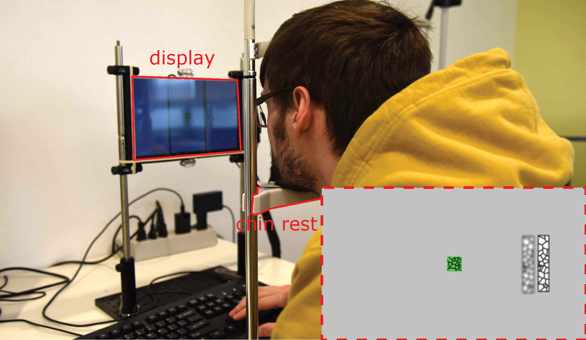
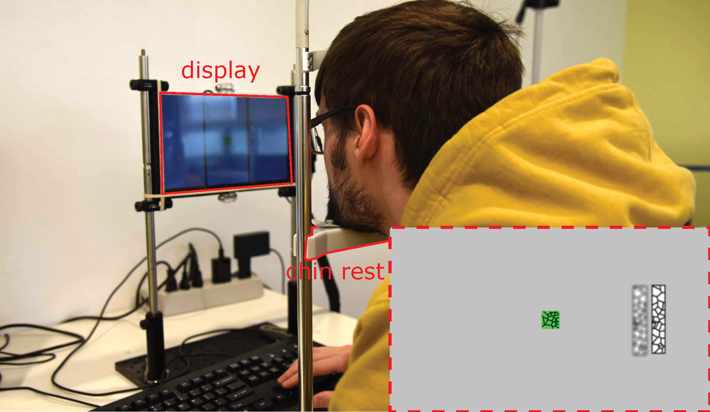
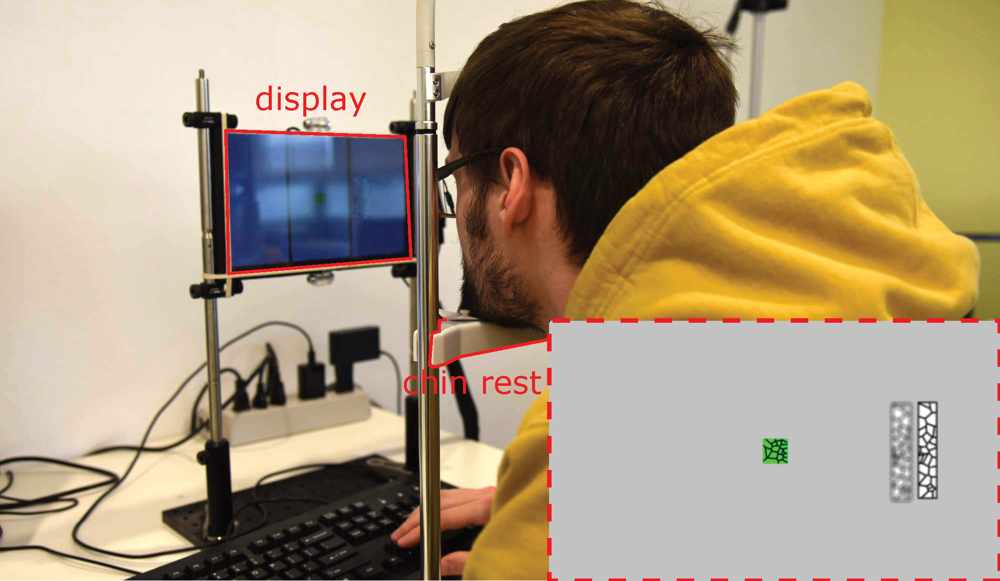

Qi Sun, Fu-Chung Huang, Li-Yi Wei, David Luebke, Arie Kaufman, Joohwan Kim
Optics Express 2020

Foveation and (de)focus are two important visual factors in designing near eye displays. Foveation can reduce computational load by lowering display details towards the visual periphery, while focal cues can reduce vergence-accommodation conflict thereby lessening visual discomfort in using near eye displays. We performed two psychophysical experiments to investigate the relationship between foveation and focus cues. The first study measured blur discrimination sensitivity as a function of visual eccentricity, where we found discrimination thresholds significantly lower than previously reported. The second study measured depth discrimination threshold where we found a clear dependency on visual eccentricity. We discuss the study results and suggest further investigation.